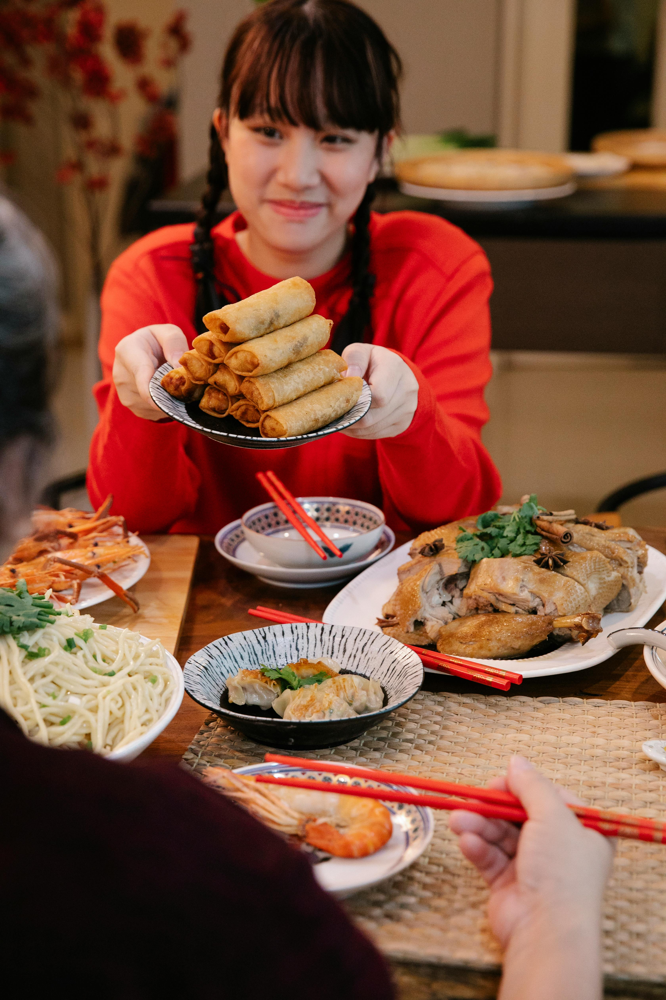

Embark on a Culinary Journey Through
the Rich and Diverse Flavors of Chinese Cuisine...Slide For More..

Chinese for u....
Come And Enjoy The Taste.....
Indian Cuisine
Experience the Vibrant and Spicy Symphony of
Authentic Indian Cuisine.....
Taste Of Indiana......
Delight in the Rich and Diverse
Flavors of India's Culinary Heritage.....
Sri Lankan Cuisine
Savor the Exotic and Spicy Delights of Sri
Lankan Cuisine......
Taste Of Ceylon......
Savor the Essence of Sri Lanka with
Every Bite......
Arabian Cuisine
Indulge in the Rich Tapestry of Arabian
Flavors.....
Arabian Flavours......
Savor the Essence of Arabian
Hospitality in Every Bite...
Chinese Cuisine
Overview
Chinese cuisine is one of the most diverse and flavorful culinary traditions in the world. With its long
history, cultural significance, and regional variations, Chinese cuisine offers a rich array of tastes,
textures, and aromas.
Key Features
Regional Diversity
Chinese cuisine varies greatly by region. Some notable regional cuisines include:
Cantonese: Known for its dim sum, seafood, and mild, fresh flavors.
Sichuan: Famous for its bold, spicy flavors and use of Sichuan peppercorns.
Shandong: Emphasizes fresh ingredients and hearty dishes, often with a salty flavor
profile.
Hunan: Similar to Sichuan, but even spicier, with a focus on fresh chili peppers.
Jiangsu: Known for its sophisticated techniques and lightly sweet flavors.
Zhejiang: Features fresh, clean flavors with an emphasis on seafood.
Ingredients
Common ingredients in Chinese cuisine include:
Staples: Rice, noodles, tofu.
Proteins: Pork, chicken, beef, duck, seafood.
Vegetables: Bok choy, cabbage, mushrooms, bamboo shoots, water chestnuts.
Spices: Garlic, ginger, star anise, cloves, cinnamon, Sichuan peppercorns.
Cooking Techniques
Popular cooking techniques include stir-frying, steaming, deep-frying, braising, and roasting.
Popular Dishes
Some well-known dishes are:
Dim Sum
Sweet and Sour Pork
Kung Pao Chicken
Mapo Tofu
Peking Duck
Hot Pot
Cultural Significance
Chinese cuisine is deeply embedded in cultural traditions, with many dishes carrying symbolic meanings and
playing crucial roles in festivals and family gatherings.
Indian Cuisine
Overview
Indian cuisine is renowned for its diverse flavors, rich aromas, and a wide variety of regional specialties.
With a deep historical significance, Indian food reflects the country's vast culture and traditions,
offering an array of tastes and textures that cater to every palate.
Key Features
Regional Diversity
Indian cuisine varies significantly across regions. Some notable regional cuisines include:
North Indian: Known for its rich gravies, breads (like naan and roti), and dishes such as
butter chicken and biryani.
South Indian: Famous for its rice-based dishes, dosas, idlis, and a variety of chutneys and
sambar.
East Indian: Features sweet and spicy flavors, with dishes like fish curry and pakhala
(fermented rice).
West Indian: Known for its vibrant curries, snacks, and sweets, including dishes like
dhokla and pav bhaji.
Central Indian: Emphasizes wholesome meals with staples like bhindi (okra) and lentils.
Northeast Indian: Offers unique flavors with dishes such as bamboo shoots and fermented
foods.
Ingredients
Common ingredients in Indian cuisine include:
Staples: Rice, wheat, millet
Proteins: Chicken, mutton, fish, legumes (dal).
Vegetables: Potatoes, spinach, okra, eggplant, and a variety of seasonal vegetables.
Seasonings: Spices like turmeric, cumin, coriander, garam masala, and mustard seeds.
Herbs: Fresh cilantro, mint, and curry leaves.
Cooking Techniques
Popular cooking techniques include roasting, frying, steaming, and slow cooking, often using traditional
methods such as tandoor baking.
Popular Dishes
Some well-known dishes are:
Biryani
Tandoori Chicken
Palak Paneer
Butter Chicken
Chole Bhature
Samosa
Cultural Significance
Indian cuisine is deeply intertwined with cultural traditions, with many dishes symbolizing festivals,
celebrations, and family gatherings, showcasing the country's rich heritage.
Sri Lankan Cuisine
Overview
Sri Lankan cuisine is a vibrant tapestry of flavors and aromas, deeply influenced by the island's diverse
cultures, geography, and history. It showcases a rich array of spices and ingredients that reflect the
island's agricultural heritage and coastal bounty.
Key Features
Regional Diversity
Sri Lankan cuisine varies across its regions, with notable specialties including:
Coastal Cuisine: Known for its fresh seafood dishes, often prepared with aromatic spices
and coconut milk.
Hill Country Cuisine: Features hearty vegetable curries, rice, and unique dishes such as
kottu roti, a popular street food.
North and East Cuisine: Influenced by Tamil traditions, emphasizing rice-based meals and
spicy preparations like fish curry.
Ingredients
Common ingredients in Sri Lankan cuisine include:
Staples: Rice, lentils, and various types of flour.
Proteins: Chicken, fish, pork, and a variety of seafood.
Vegetables: Eggplant, okra, pumpkin, and leafy greens.
Seasonings: A wide array of spices including cinnamon, cardamom, curry powder, and chili
powder.
Herbs: Fresh coriander and curry leaves.
Cooking Techniques
Popular cooking techniques include sautéing, steaming, and slow-cooking, often using traditional clay pots to
enhance flavors.
Popular Dishes
Some well-known dishes are:
Rice and Curry
Kottu Roti
Hoppers (Appa)
Fish Ambul Thiyal
Dhal Curry
Pol Sambol
Cultural Significance
Indian cuisine is deeply intertwined with cultural traditions, with many dishes symbolizing festivals,
celebrations, and family gatherings, showcasing the country's rich heritage.
Arabian Cuisine
Overview
Arabian cuisine is a rich and diverse culinary tradition that reflects the cultural heritage of the Arab
world. Known for its bold flavors and aromatic spices, it combines a variety of ingredients to create
memorable dishes that are enjoyed across the region.
Key Features
Regional Diversity
Arabian cuisine varies by country and region, with notable specialties including:
Levantine Cuisine: Famous for dishes like hummus, tabbouleh, and shawarma, often featuring
fresh herbs and vegetables.
Gulf Cuisine: Known for its rice dishes such as kabsa and machboos, often accompanied by
grilled meats and rich spices.
North African Cuisine: Features tagines and couscous, incorporating a mix of spices and
slow-cooking techniques.
Ingredients
Common ingredients in Arabian cuisine include:
Staples: Rice, bulgur, and flatbreads like pita and khubz.
Proteins: Lamb, chicken, beef, and a variety of seafood.
Vegetables: Tomatoes, cucumbers, eggplants, and chickpeas.
Seasonings: A wide range of spices including cumin, coriander, sumac, and saffron.
Herbs: Fresh parsley, mint, and cilantro.
Cooking Techniques
Popular cooking techniques include grilling, roasting, and slow-cooking, often using traditional methods to
enhance the flavors of the dishes.
Popular Dishes
Some well-known dishes are:
Shawarma
Hummus
Falafel
Kabsa
Mandi
Tabbouleh
Cultural Significance
Arabian cuisine plays a vital role in cultural celebrations and gatherings, with many dishes symbolizing
hospitality and community, reflecting the rich heritage of the Arab world.